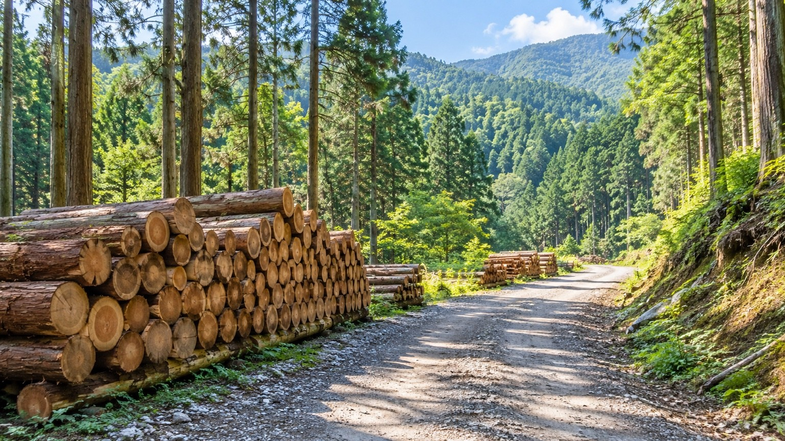

FAQ
よくあるご質問
立木買取や森林整備、危険木伐採、木材持ち込みなどについて、よくいただくご質問をまとめています。
気になる項目を選んでご確認ください。
QUESTIONS & ANSWERS
ご相談前に
ご確認ください
サービス内容や木材の持ち込み、お見積について、よくいただくご質問をご案内します。
掲載されていない内容についても、お気軽にお問い合わせください。
FOREST & STANDING TREES
立木買取・森林整備
立木はどのような状態でも買取できますか？
樹種・大きさ・数量・山林の場所・搬出条件などによって買取の可否が異なります。
まずは現地の状況を確認したうえで、買取可能か判断いたします。お気軽にご相談ください。
買取できるか現地を見てもらえますか？
はい。山林の場所や立木の状態、搬出条件などを現地で確認したうえでご案内いたします。
山林の伐採から搬出までお願いできますか？
はい。伐採だけでなく、現場の状況に応じて集積・搬出まで一貫して対応しています。
詳しい作業内容については、現地確認後にご案内いたします。
森林整備ではどのような作業に対応していますか？
山林の状況を確認し、伐採や森林整備など、現場に合わせた作業をご提案します。
山林ごとに条件が異なるため、まずはご相談ください。
山林の場所によって対応できないことはありますか？
道路状況や地形、重機の進入条件などにより対応方法が異なる場合があります。
現地の状況を確認したうえでご案内いたします。
DANGER TREE & SPECIAL CUTTING
危険木・特殊伐採
家の近くにある危険な木も伐採できますか？
はい。住宅や建物の近くにある木についても現場を確認したうえで対応方法をご提案します。
電線や建物、道路の近くの木にも対応できますか？
現場の状況を確認し、安全に作業できる方法を検討します。
通常の伐採が難しい場所では、特殊伐採などの方法を検討する場合があります。
木が1本だけでも相談できますか？
はい。本数にかかわらず、まずはご相談ください。
木の状態や周辺状況を確認して対応方法をご案内します。
通常の伐採が難しい場所でも対応できますか？
はい。建物や道路が近い場所など、通常の方法で倒すことが難しい場合は、現場に合わせた伐採方法を検討します。
危険木かどうか分からない場合でも相談できますか？
はい。傾いている木や、倒木が心配な木など、判断が難しい場合もご相談ください。
現地の状況を確認して対応方法をご案内します。
WOOD ACCEPTANCE
木材持ち込み・受入
どのような木材を持ち込めますか？
丸太のほか、枝葉・根株・竹・竹根などを受け入れています。
状態や内容によって受入条件が異なる場合がありますので、事前にご確認ください。
丸太は持ち込みできますか？
はい。丸太の持ち込みに対応しています。
長さや状態などが適正な場合は、買取できる場合もあります。
詳しくは事前にご相談ください。
枝葉や根株、竹も持ち込めますか？
はい。枝葉・根株・竹・竹根の受け入れに対応しています。
種類によって料金が異なりますので、事前にご確認ください。
持ち込む前に連絡は必要ですか？
スムーズな受け入れのため、事前にご連絡をお願いいたします。
LINE公式アカウントから搬入予定をご連絡いただくこともできます。
大型車でも持ち込みできますか？
はい。大型車での搬入にも対応しています。
車両や搬入内容によっては事前確認が必要な場合がありますので、あらかじめご連絡ください。
受入時間と定休日を教えてください。
受入時間は7:00〜18:00です。
定休日は日曜日です。
時間外の搬入については、事前にご相談ください。
ESTIMATE & CONTACT
見積・ご相談
見積をお願いするにはどうすればいいですか？
お電話またはお問い合わせフォームからご連絡ください。
伐採や立木買取など、現地確認が必要な内容については、状況を確認したうえでご案内します。
写真を送って相談できますか？
はい。現場や対象となる木の写真がある場合は、ご相談時の参考になります。
詳細な判断が必要な場合は、現地確認をお願いすることがあります。
対応エリアはどこまでですか？
現場の場所や作業内容によって対応可否が異なります。
まずは場所とご相談内容をお知らせください。
法人でも個人でも依頼できますか？
はい。法人・個人を問わずご相談いただけます。
ご相談内容に応じて対応方法をご案内します。
相談したら必ず依頼しないといけませんか？
いいえ。まずはご相談いただき、内容をご確認いただいたうえでご検討ください。